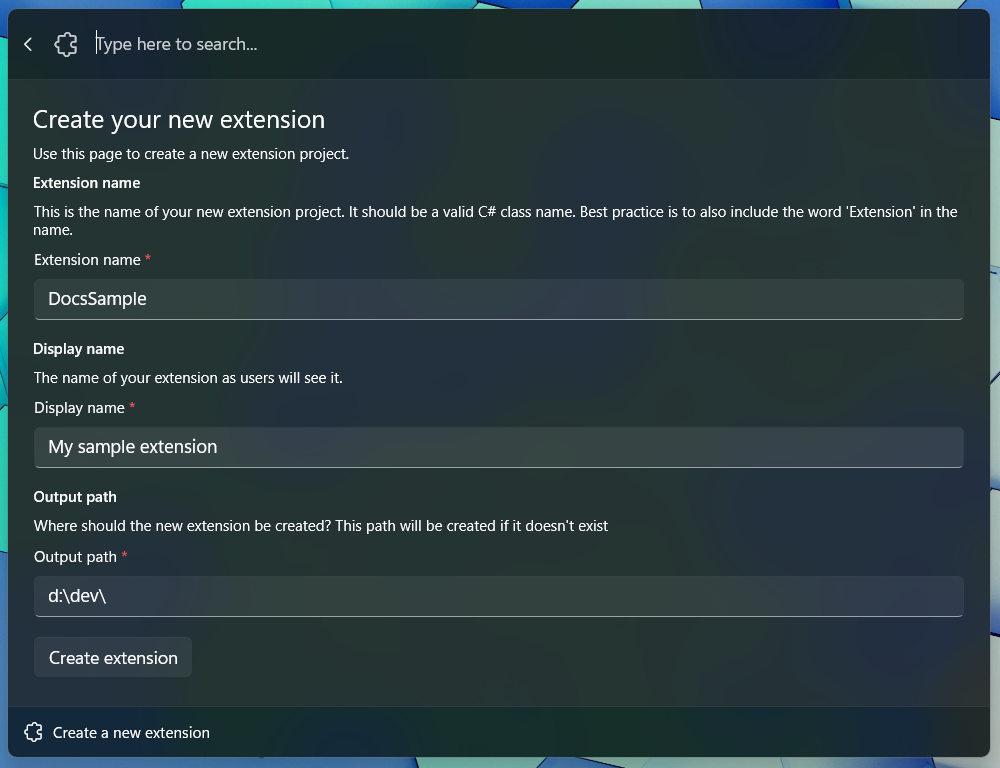
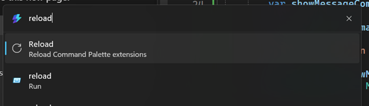
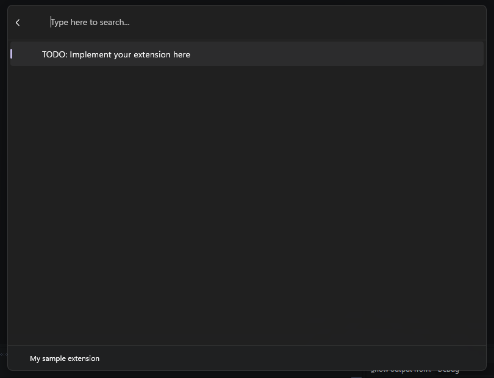

How to create Command Palette extensions
Learn how to build custom extensions for the Command Palette using C#. This comprehensive guide covers everything from project setup to deployment, helping you enhance this powerful productivity tool for Windows.
Overview
The Command Palette extension system allows developers to create custom commands and workflows that integrate seamlessly with PowerToys Command Palette. Extensions are written in C# and can be developed using the built-in template generator.
What you'll learn:
- How to create a new Command Palette extension project
- Understanding the extension project structure
- Deploying and testing your extension
- Best practices for extension development
Prerequisites:
- Visual Studio with C# development workload
- Windows 11 with PowerToys installed
- Basic knowledge of C# programming
Extensions are written in C#. The fastest way to get started writing extensions is from the Command Palette itself.
- Open Command Palette
- Run the
Create a new extensioncommand - Fill out the fields to populate the template project, and you should be ready to start.
Create a new extension
The form will ask you for the following information:
- ExtensionName: The name of your extension. This will be used as the name of the project and the name of the class that implements your commands. Make sure it's a valid C# class name - it shouldn't have any spaces or special characters, and should start with a capital letter. Reference in docs as
<ExtensionName>. - Extension Display Name: The name of your extension as it will appear in the Command Palette. This can be a more human-readable name.
- Output Path: The folder where the project will be created.
- The project will be created in a subdirectory of the path you provided.
- If this path doesn't exist, it will be created for you.

Understanding the extension project structure
Once you submit the form, Command Palette will automatically generate the project for you. At this point, your projects structure should look like the following:
<ExtensionName>/
│ Directory.Build.props
│ Directory.Packages.props
│ nuget.config
│ <ExtensionName>.sln
└───<ExtensionName>
│ app.manifest
│ Package.appxmanifest
│ Program.cs
│ <ExtensionName>.cs
│ <ExtensionName>.csproj
│ <ExtensionName>CommandsProvider.cs
├───Assets
│ <A bunch of placeholder images>
├───Pages
│ <ExtensionName>Page.cs
└───Properties
│ launchSettings.json
└───PublishProfiles
win-arm64.pubxml
win-x64.pubxml
(with <ExtensionName> replaced with the name you provided)
You can deploy and run your extension:
- In Visual Studio, Deploy your extension
How to Deploy your extension
- In the navigation bar, click on
Build - Click on
Deploy <ExtensionName>
Once your package is deployed and running, Command Palette will automatically discover your extension and load it into the palette.
Tip
Make sure you deploy your app! Just building your application won't update the package in the same way that deploying it will.
Warning
Running "<ExtensionName> (Unpackaged)" from Visual Studio will not deploy your app package.
If you're using git for source control, and you used the standard .gitignore file for C#, you'll want to remove the following two lines from your .gitignore file:
**/Properties/launchSettings.json
*.pubxml
These files are used by WinAppSdk to deploy your app as a package. Without it, anyone who clones your repo won't be able to deploy your extension.
- In the Command Palette, type
Reloadand pressEnter- Make sure to select the
Reloadthat has a subtitle of:Reload Command Palette Extension
- Make sure to select the
- In the Command Palette, scroll all the way down to the bottom of the list of commands
- or
up arrowonce to get to the end
- or
- Press
Enteron your <ExtensionName> - You should see a single command that says
TODO: Implement your extension here.

Congrats! You've made your first extension! Now let's go ahead and actually add some commands to it.
Tip
When you make changes to your extension, you can rebuild your project and deploy it again. Command Palette will not notice changes to packages that are re-ran through Visual Studio, so you'll need to manually run the "Reload" command to force Command Palette to re-instantiate your extension.